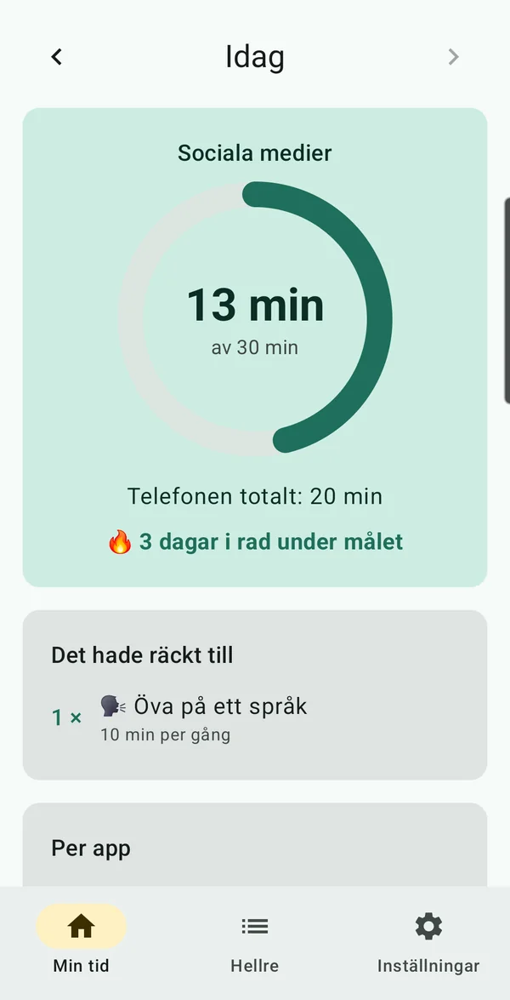
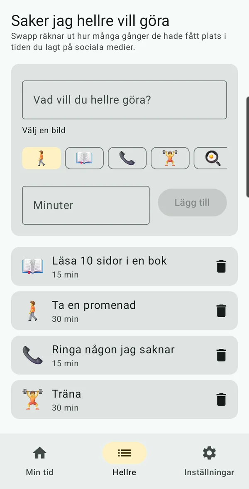
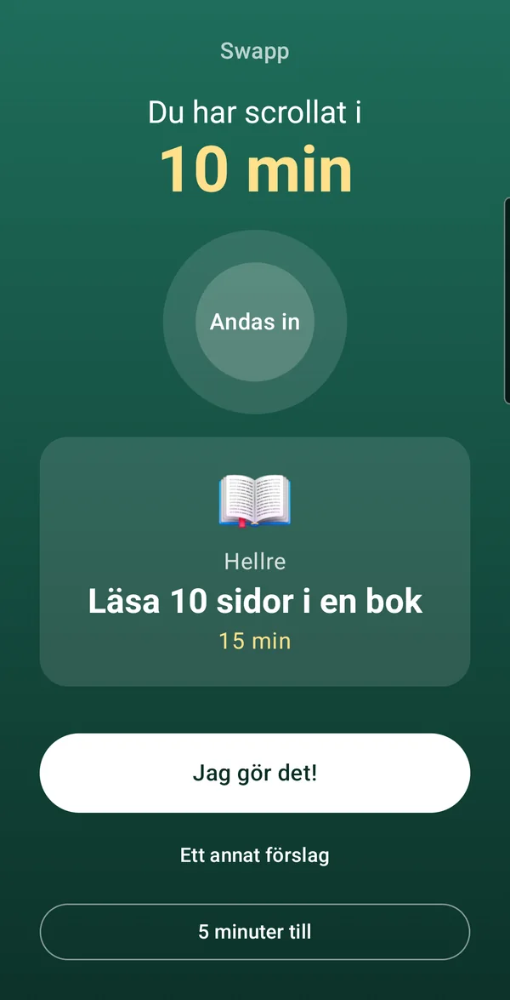

← Alla projektPrivat kod
05 / 06
Swapp
En Android-app för tiden i sociala medier.
Visas gärna på förfrågan
05 / 06
En Android-app för tiden i sociala medier.
Visas gärna på förfrågan
Det är lätt att inte märka hur mycket tid som går i sociala appar. En siffra i minuter säger inte så mycket, men en promenad eller ett kapitel i en bok gör det.
Swapp visar tiden som något man känner igen, och den gör det utan att något om dig lämnar telefonen.
Läs exakt vad appen läser och sparar i integritetspolicyn.


